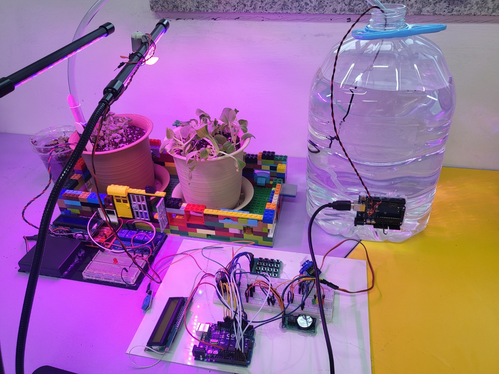
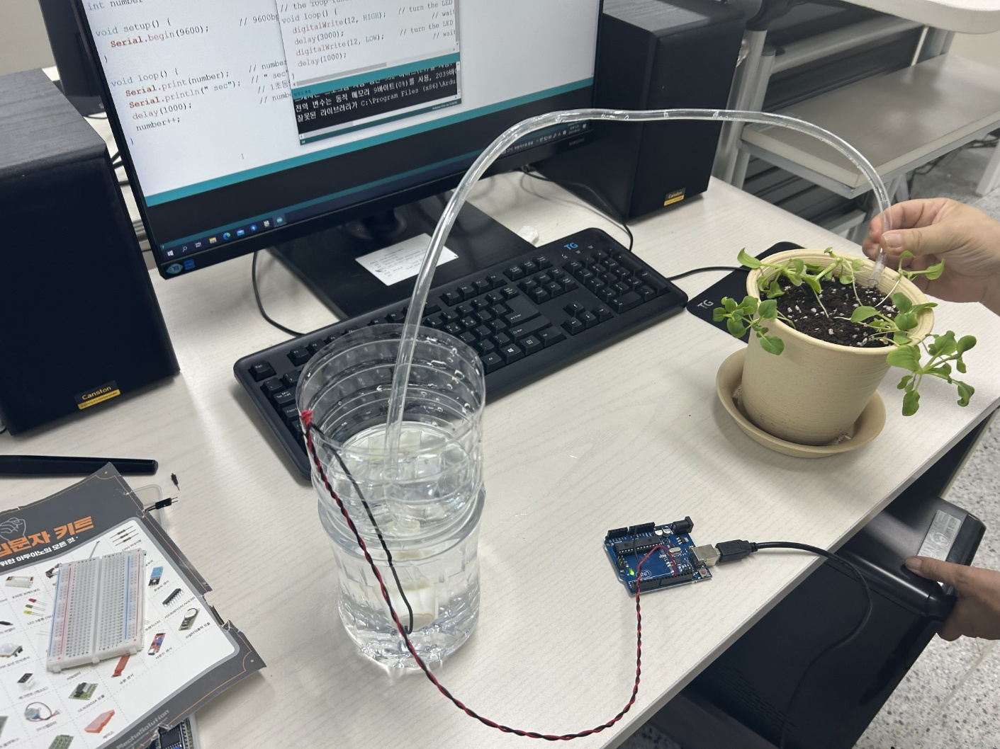
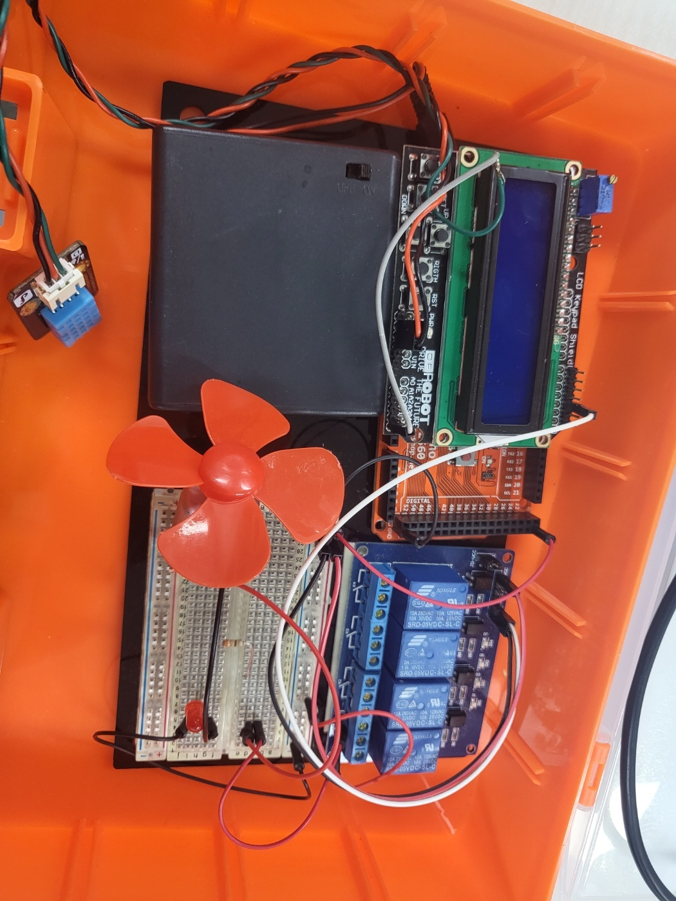
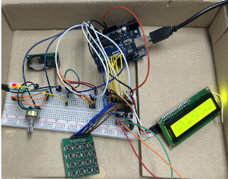
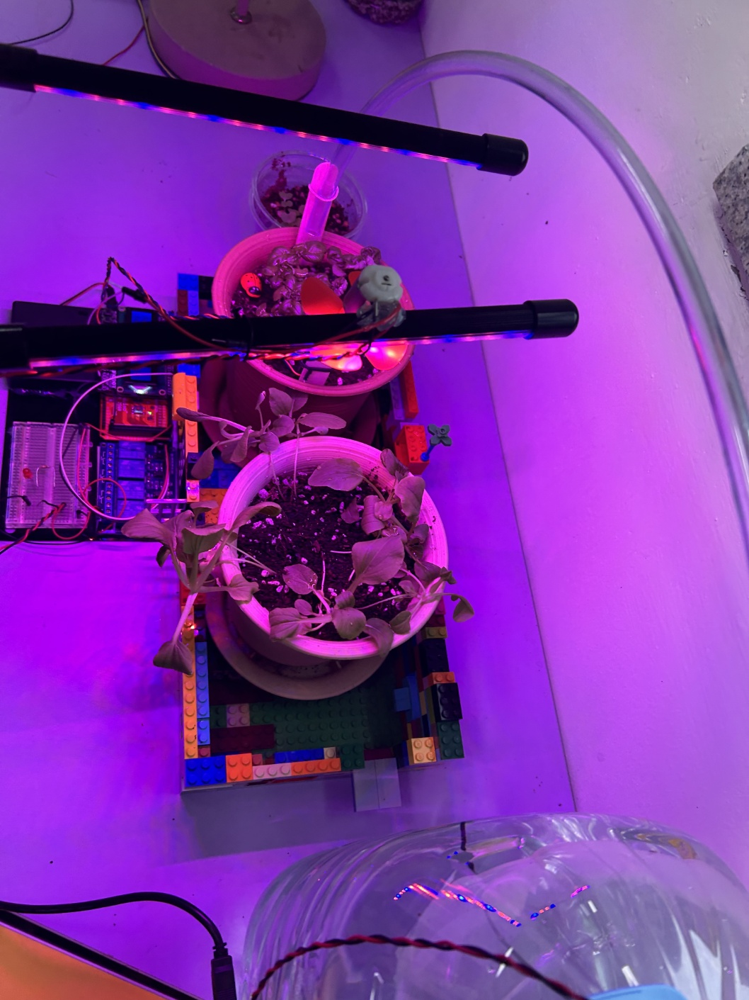

mallangmallang
Menu
Home
스마트화분
결과물&발표자료
Smart Pot
2023 capstone_gbsw
스마트 화분 최종 구성사진

화분의 기능들 _Smart farm technology
수분 공급(점적관수)

- 아두이노와 수중펌프를 이용하여 식물에 점적관수 방식으로 물을 주어
최대한 물을 아끼고 최적의 수분 환경을 맞추었다
공조(공기조화)

- 온도확인(25도) 전후로 선풍기 on,off
+ 공조(공기조화) 대류현상 이용해 습도 및 온도 조절을 할 수 있다
온습도 표시/날짜표시

- 날짜 표시를 위해 RTC모듈을 사용한다. 가변저항 LED로 빛 조절을 한다
빛(생장등_레드 광합성/블루 발아용)

- 사진 속의 생장등을 통해 빛이 없을 때도 식물이 빛을 받아 광합성 하여
성장할 수 있도록 하였다